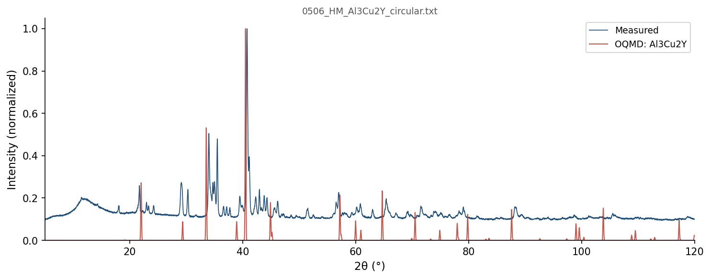

| Element | Expected (mol frac) | Measured (mol frac) | Δ (mol frac) | Δ (%) |
|---|---|---|---|---|
| Al | 0.5000 | 0.5051 | +0.0051 | +0.51% |
| Cu | 0.3333 | 0.3281 | -0.0052 | -0.52% |
| Y | 0.1667 | 0.1668 | +0.0001 | +0.01% |
392 OQMD entries in the Al-Cu-Y element system (29 on hull, 63 ICSD-tagged). OQMD: negative = below hull (stable). Sorted most stable first.
| Composition | Stability (meV/atom) | ΔE (meV/atom) | ICSD | Space | Entry | CIF |
|---|---|---|---|---|---|---|
Al2Y1 |
-95 | -534.0 | Al-Y | 1590056 | CIF | |
Al1Cu1Y1 |
-60 | -460.2 | ✓ | Al-Cu-Y | 27751 | CIF |
Cu1Y1 |
-44 | -260.0 | ✓ | Cu-Y | 2012358 | CIF |
Al3Y1 |
-38 | -438.9 | Al-Y | 321899 | CIF | |
Al2Cu1 |
-33 | -175.0 | Al-Cu | 695020 | CIF | |
Al5Cu5Y2 |
-28 | -441.1 | Al-Cu-Y | 1973830 | CIF | |
Al3Cu7Y2 |
-20 | -365.0 | Al-Cu-Y | 2149812 | CIF | |
Cu2Y1 |
-19 | -263.5 | ✓ | Cu-Y | 22909 | CIF |
Al8Cu4Y1 |
-18 | -306.2 | ✓ | Al-Cu-Y | 10442 | CIF |
Al1Y2 |
-18 | -315.6 | ✓ | Al-Y | 10610 | CIF |
Al1Y1 |
-13 | -437.9 | Al-Y | 1782622 | CIF | |
Cu5Y1 |
-13 | -192.1 | ✓ | Cu-Y | 29828 | CIF |
Al4Cu9 |
-12 | -211.9 | ✓ | Al-Cu | 32772 | CIF |
Al7Cu2Y3 |
-12 | -497.6 | ✓ | Al-Cu-Y | 22908 | CIF |
Al3Cu2Y1 |
-11 | -437.5 | Al-Cu-Y | 1370163 | CIF | |
Al1Cu1 |
-10 | -213.6 | Al-Cu | 1949066 | CIF | |
Al1Cu5Y1 |
-9 | -274.2 | Al-Cu-Y | 2146187 | CIF | |
Al1Cu3 |
-7 | -188.9 | ✓ | Al-Cu | 19463 | CIF |
Al3Cu1Y1 |
-7 | -446.6 | Al-Cu-Y | 2144862 | CIF | |
Al9Cu13 |
-6 | -218.7 | Al-Cu | 2135324 | CIF | |
Cu4Y1 |
-6 | -212.1 | Cu-Y | 2132079 | CIF | |
Al3Cu11 |
-1 | -162.6 | Al-Cu | 2160158 | CIF | |
Al1 |
+0 | 0.0 | Al | 1215750 | CIF | |
Cu1 |
+0 | 0.0 | Cu | 2072241 | CIF | |
Cu1 |
+0 | 0.0 | Cu | 2066481 | CIF | |
Cu1 |
+0 | 0.0 | ✓ | Cu | 635950 | CIF |
Y1 |
+0 | 0.0 | Y | 1215387 | CIF | |
Y1 |
+0 | 0.0 | ✓ | Y | 2015273 | CIF |
Y1 |
+0 | 0.0 | ✓ | Y | 2030142 | CIF |
Al3Cu1Y1 |
+0 | -446.6 | Al-Cu-Y | 1987182 | CIF | |
Cu1 |
+0 | 0.1 | Cu | 2066479 | CIF | |
Y1 |
+0 | 0.1 | ✓ | Y | 51193 | CIF |
Al2Y1 |
+0 | -533.9 | ✓ | Al-Y | 10612 | CIF |
Cu1 |
+0 | 0.3 | ✓ | Cu | 592441 | CIF |
Cu1 |
+0 | 0.3 | ✓ | Cu | 593869 | CIF |
Cu1 |
+0 | 0.3 | ✓ | Cu | 598513 | CIF |
Cu1 |
+0 | 0.4 | ✓ | Cu | 594520 | CIF |
Cu1 |
+0 | 0.5 | ✓ | Cu | 594301 | CIF |
Cu1 |
+0 | 0.5 | Cu | 1214520 | CIF | |
Cu1 |
+1 | 0.5 | ✓ | Cu | 594302 | CIF |
Al1Cu1 |
+1 | -213.0 | ✓ | Al-Cu | 7239 | CIF |
Al1Cu3 |
+1 | -188.3 | Al-Cu | 320709 | CIF | |
Y1 |
+1 | 0.7 | ✓ | Y | 8147 | CIF |
Al1 |
+1 | 0.8 | ✓ | Al | 8100 | CIF |
Al1 |
+1 | 0.8 | Al | 1214503 | CIF | |
Cu1 |
+1 | 0.8 | ✓ | Cu | 594518 | CIF |
Cu1 |
+1 | 0.8 | ✓ | Cu | 594517 | CIF |
Cu1 |
+1 | 0.9 | ✓ | Cu | 594519 | CIF |
Al1 |
+1 | 0.9 | Al | 1485019 | CIF | |
Al1 |
+1 | 1.0 | Al | 1215661 | CIF | |
Cu1 |
+1 | 1.1 | Cu | 2072238 | CIF | |
Cu1 |
+1 | 1.3 | Cu | 2072237 | CIF | |
Cu1 |
+1 | 1.3 | Cu | 2074487 | CIF | |
Cu1 |
+2 | 1.6 | Cu | 2072239 | CIF | |
Cu1 |
+2 | 1.7 | Cu | 2072235 | CIF | |
Al1 |
+2 | 1.8 | Al | 1214592 | CIF | |
Cu1 |
+2 | 2.2 | Cu | 2072240 | CIF | |
Y1 |
+2 | 2.2 | Y | 1216103 | CIF | |
Al3Cu13 |
+2 | -140.0 | Al-Cu | 2160199 | CIF | |
Cu1 |
+2 | 2.5 | Cu | 2072236 | CIF | |
Cu1 |
+3 | 2.7 | Cu | 2072225 | CIF | |
Cu1 |
+3 | 2.7 | Cu | 2072242 | CIF | |
Cu1 |
+3 | 2.8 | Cu | 2072249 | CIF | |
Cu1 |
+3 | 2.8 | Cu | 2072243 | CIF | |
Al3Y1 |
+3 | -436.1 | ✓ | Al-Y | 10615 | CIF |
Cu1 |
+3 | 2.9 | Cu | 1215678 | CIF | |
Cu1 |
+3 | 3.0 | Cu | 2072244 | CIF | |
Cu17Y2 |
+3 | -118.3 | Cu-Y | 1453224 | CIF | |
Cu1 |
+4 | 3.6 | Cu | 2072245 | CIF | |
Cu1 |
+4 | 4.0 | Cu | 2072248 | CIF | |
Cu1 |
+4 | 4.3 | Cu | 2072227 | CIF | |
Al1 |
+4 | 4.3 | Al | 1215839 | CIF | |
Cu1 |
+5 | 4.6 | Cu | 2072247 | CIF | |
Y1 |
+5 | 4.6 | ✓ | Y | 83105 | CIF |
Cu1 |
+5 | 4.7 | Cu | 2072228 | CIF | |
Y1 |
+6 | 5.6 | Y | 1215298 | CIF | |
Cu1 |
+6 | 5.6 | Cu | 1215411 | CIF | |
Al1Cu3 |
+6 | -183.3 | Al-Cu | 303630 | CIF | |
Cu1 |
+6 | 5.9 | Cu | 2072250 | CIF | |
Cu1 |
+6 | 6.1 | Cu | 2072229 | CIF | |
Cu1 |
+6 | 6.2 | Cu | 1216034 | CIF | |
Y1 |
+7 | 6.8 | Y | 1215477 | CIF | |
Cu1 |
+7 | 6.9 | Cu | 2072232 | CIF | |
Cu1 |
+8 | 7.5 | Cu | 1215321 | CIF | |
Cu1 |
+8 | 7.6 | Cu | 2072230 | CIF | |
Al2Y3 |
+8 | -356.7 | ✓ | Al-Y | 27977 | CIF |
Al2Y3 |
+8 | -356.7 | ✓ | Al-Y | 10613 | CIF |
Cu1Y8 |
+8 | -49.9 | Cu-Y | 1519392 | CIF | |
Al2Y3 |
+8 | -356.6 | Al-Y | 1338573 | CIF | |
Cu5Y3 |
+8 | -254.4 | Cu-Y | 1339133 | CIF | |
Cu1 |
+8 | 8.3 | Cu | 1520484 | CIF | |
Cu1 |
+8 | 8.4 | Cu | 2072252 | CIF | |
Cu1Y2 |
+9 | -164.8 | Cu-Y | 1800614 | CIF | |
Cu1 |
+9 | 9.0 | Cu | 2072251 | CIF | |
Cu1 |
+9 | 9.0 | Cu | 2072233 | CIF | |
Cu17Y2 |
+10 | -111.8 | Cu-Y | 1340935 | CIF | |
Cu2Y1 |
+10 | -253.7 | Cu-Y | 1435013 | CIF | |
Cu1 |
+11 | 11.0 | Cu | 2072234 | CIF | |
Al1Cu3 |
+11 | -177.9 | ✓ | Al-Cu | 22409 | CIF |
Al1Cu2 |
+11 | -202.2 | Al-Cu | 1338850 | CIF | |
Al4Cu1Y1 |
+12 | -370.4 | Al-Cu-Y | 1787314 | CIF | |
Cu1 |
+13 | 12.6 | Cu | 2072231 | CIF | |
Al2Y1 |
+13 | -521.4 | Al-Y | 1339991 | CIF | |
Cu12Y1 |
+13 | -75.9 | Cu-Y | 1454230 | CIF | |
Cu1 |
+13 | 12.8 | Cu | 2072253 | CIF | |
Cu1 |
+13 | 13.1 | Cu | 2072226 | CIF | |
Al1 |
+14 | 14.2 | Al | 1215394 | CIF | |
Cu1 |
+14 | 14.3 | Cu | 2072254 | CIF | |
Cu1Y3 |
+15 | -114.8 | Cu-Y | 1787170 | CIF | |
Al1Cu2 |
+16 | -197.9 | Al-Cu | 1800542 | CIF | |
Cu1Y1 |
+16 | -244.0 | ✓ | Cu-Y | 88957 | CIF |
Cu1Y1 |
+16 | -243.9 | ✓ | Cu-Y | 20721 | CIF |
Cu1Y1 |
+16 | -243.5 | Cu-Y | 305541 | CIF | |
Al3Y1 |
+17 | -421.8 | ✓ | Al-Y | 10614 | CIF |
Al3Y1 |
+17 | -421.8 | Al-Y | 346385 | CIF | |
Cu5Y1 |
+17 | -174.6 | Cu-Y | 1784225 | CIF | |
Al1Y1 |
+18 | -419.5 | ✓ | Al-Y | 10608 | CIF |
Al1Y1 |
+19 | -419.4 | ✓ | Al-Y | 122880 | CIF |
Cu1 |
+19 | 18.7 | Cu | 1215232 | CIF | |
Al2Cu1 |
+19 | -156.3 | ✓ | Al-Cu | 18664 | CIF |
Cu1 |
+19 | 19.1 | Cu | 2072246 | CIF | |
Al2Cu2Y1 |
+19 | -425.7 | Al-Cu-Y | 1252029 | CIF | |
Al2Cu1 |
+19 | -155.7 | ✓ | Al-Cu | 7789 | CIF |
Al2Cu2Y1 |
+20 | -425.0 | Al-Cu-Y | 1235351 | CIF | |
Al1 |
+20 | 20.2 | Al | 1216017 | CIF | |
Al1Y1 |
+21 | -417.1 | Al-Y | 1217577 | CIF | |
Al1Y1 |
+21 | -416.9 | ✓ | Al-Y | 116118 | CIF |
Al1Y1 |
+21 | -416.8 | Al-Y | 1522210 | CIF | |
Al1Y1 |
+21 | -416.8 | Al-Y | 306457 | CIF | |
Al1Y1 |
+21 | -416.8 | ✓ | Al-Y | 10609 | CIF |
Al1Cu3 |
+21 | -167.5 | ✓ | Al-Cu | 19408 | CIF |
Y1 |
+24 | 24.1 | Y | 1214586 | CIF | |
Y1 |
+24 | 24.3 | ✓ | Y | 685034 | CIF |
Al3Cu5 |
+25 | -191.6 | Al-Cu | 1795215 | CIF | |
Al3Cu5 |
+25 | -191.3 | Al-Cu | 1782961 | CIF | |
Y1 |
+25 | 25.2 | Y | 1215922 | CIF | |
Al3Cu1Y1 |
+25 | -421.2 | Al-Cu-Y | 1788119 | CIF | |
Y1 |
+26 | 26.0 | Y | 1215744 | CIF | |
Al1Y1 |
+26 | -411.5 | ✓ | Al-Y | 2029766 | CIF |
Al2Cu2Y1 |
+27 | -418.2 | Al-Cu-Y | 1953572 | CIF | |
Al1Cu3 |
+29 | -159.6 | Al-Cu | 345195 | CIF | |
Al2Cu1Y1 |
+30 | -448.8 | Al-Cu-Y | 1281532 | CIF | |
Y1 |
+30 | 30.4 | ✓ | Y | 2037981 | CIF |
Cu7Y2 |
+31 | -189.6 | Cu-Y | 1791788 | CIF | |
Cu6Y5 |
+32 | -228.7 | Cu-Y | 2131884 | CIF | |
Al1 |
+33 | 32.6 | ✓ | Al | 2029852 | CIF |
Al1 |
+33 | 32.8 | Al | 1215304 | CIF | |
Al1Cu1 |
+33 | -180.7 | Al-Cu | 1217516 | CIF | |
Al1 |
+33 | 33.1 | Al | 1215215 | CIF | |
Al1Cu1 |
+33 | -180.2 | ✓ | Al-Cu | 2034515 | CIF |
Y1 |
+34 | 33.7 | Y | 1214675 | CIF | |
Y1 |
+34 | 34.2 | Y | 1215833 | CIF | |
Al3Cu2 |
+34 | -156.0 | ✓ | Al-Cu | 10431 | CIF |
Al1Cu4 |
+35 | -117.0 | ✓ | Al-Cu | 27724 | CIF |
Cu1 |
+35 | 35.1 | ✓ | Cu | 637373 | CIF |
Cu1 |
+35 | 35.5 | Cu | 1522153 | CIF | |
Cu1 |
+35 | 35.5 | Cu | 1522150 | CIF | |
Al1Cu2Y2 |
+36 | -344.5 | Al-Cu-Y | 1480842 | CIF | |
Al1Y1 |
+36 | -402.3 | Al-Y | 1340023 | CIF | |
Al1Cu3 |
+36 | -152.6 | Al-Cu | 314172 | CIF | |
Cu1 |
+36 | 36.3 | Cu | 1214609 | CIF | |
Cu1 |
+37 | 37.0 | Cu | 1215143 | CIF | |
Al1Y3 |
+38 | -198.5 | Al-Y | 322630 | CIF | |
Cu13Y1 |
+39 | -42.9 | Cu-Y | 1277913 | CIF | |
Cu3Y1 |
+42 | -189.2 | Cu-Y | 1821338 | CIF | |
Al4Y5 |
+43 | -354.1 | Al-Y | 1338446 | CIF | |
Al4Cu3 |
+43 | -154.0 | Al-Cu | 1339145 | CIF | |
Al1Cu2Y1 |
+44 | -343.9 | Al-Cu-Y | 405574 | CIF | |
Al1Y1 |
+46 | -391.7 | Al-Y | 337999 | CIF | |
Al1Cu3 |
+47 | -142.1 | Al-Cu | 2082208 | CIF | |
Cu3Y1 |
+47 | -184.4 | Cu-Y | 1782392 | CIF | |
Al3Cu1 |
+47 | -84.1 | Al-Cu | 1787088 | CIF | |
Al3Y5 |
+47 | -298.8 | ✓ | Al-Y | 689961 | CIF |
Al5Cu1 |
+49 | -38.4 | Al-Cu | 1340600 | CIF | |
Al1Y3 |
+50 | -186.8 | Al-Y | 347116 | CIF | |
Al1Y3 |
+50 | -186.8 | ✓ | Al-Y | 10611 | CIF |
Al2Cu3Y1 |
+51 | -352.3 | Al-Cu-Y | 1287668 | CIF | |
Al2Cu3Y1 |
+51 | -352.3 | Al-Cu-Y | 1250644 | CIF | |
Al2Cu3Y1 |
+51 | -352.3 | Al-Cu-Y | 1287666 | CIF | |
Al1Cu1Y2 |
+53 | -303.4 | Al-Cu-Y | 410006 | CIF | |
Al2Cu3 |
+53 | -165.2 | Al-Cu | 1250633 | CIF | |
Cu1 |
+55 | 54.9 | Cu | 2054435 | CIF | |
Al1Cu1 |
+55 | -158.6 | Al-Cu | 1782533 | CIF | |
Al1 |
+56 | 55.7 | Al | 1214770 | CIF | |
Al1 |
+56 | 55.7 | Al | 1577399 | CIF | |
Al1Cu2 |
+58 | -155.3 | Al-Cu | 1914408 | CIF | |
Cu1 |
+60 | 60.4 | Cu | 1214876 | CIF | |
Al1 |
+62 | 61.6 | Al | 1214859 | CIF | |
Al8Y1 |
+63 | -131.6 | Al-Y | 1338608 | CIF | |
Al1 |
+64 | 64.2 | Al | 1489260 | CIF | |
Y1 |
+65 | 64.6 | ✓ | Y | 2031514 | CIF |
Al9Cu2 |
+66 | -29.7 | Al-Cu | 1340994 | CIF | |
Cu1 |
+66 | 66.1 | Cu | 1215856 | CIF | |
Al12Y1 |
+66 | -68.8 | Al-Y | 1783384 | CIF | |
Al9Cu2 |
+67 | -28.6 | Al-Cu | 1340240 | CIF | |
Al6Y1 |
+68 | -183.0 | Al-Y | 1794708 | CIF | |
Al1Cu1 |
+70 | -143.1 | Al-Cu | 305507 | CIF | |
Al1Cu3 |
+73 | -115.7 | Al-Cu | 2080567 | CIF | |
Cu1 |
+73 | 73.4 | Cu | 1214787 | CIF | |
Al1Cu1 |
+74 | -139.5 | Al-Cu | 1964544 | CIF | |
Cu1 |
+75 | 75.2 | ✓ | Cu | 2031491 | CIF |
Cu1 |
+76 | 75.5 | Cu | 2069716 | CIF | |
Cu1 |
+76 | 75.5 | Cu | 2069710 | CIF | |
Cu1 |
+76 | 75.5 | Cu | 2069713 | CIF | |
Cu1 |
+76 | 75.5 | Cu | 2069746 | CIF | |
Cu1 |
+76 | 75.5 | Cu | 2069725 | CIF | |
Cu1 |
+76 | 75.5 | Cu | 2069728 | CIF | |
Cu1 |
+76 | 75.5 | Cu | 2069719 | CIF | |
Cu1 |
+76 | 75.5 | Cu | 2069731 | CIF | |
Cu1 |
+76 | 75.5 | Cu | 2069734 | CIF | |
Cu1 |
+76 | 75.5 | Cu | 2069737 | CIF | |
Cu1 |
+76 | 75.5 | Cu | 2069740 | CIF | |
Cu1 |
+76 | 75.5 | Cu | 2069743 | CIF | |
Cu2Y1 |
+76 | -187.2 | ✓ | Cu-Y | 2023450 | CIF |
Al3Cu1 |
+77 | -54.2 | Al-Cu | 2080703 | CIF | |
Cu1 |
+78 | 78.3 | Cu | 2069722 | CIF | |
Al1 |
+79 | 78.7 | Al | 1214948 | CIF | |
Al1 |
+79 | 78.7 | Al | 1280406 | CIF | |
Cu1 |
+80 | 79.7 | Cu | 2066483 | CIF | |
Al6Cu1 |
+80 | 4.7 | Al-Cu | 1783298 | CIF | |
Al17Y2 |
+81 | -104.1 | Al-Y | 1280516 | CIF | |
Al1Cu1 |
+86 | -128.0 | Al-Cu | 2083174 | CIF | |
Cu3Y1 |
+86 | -144.9 | Cu-Y | 319750 | CIF | |
Al1Cu1 |
+88 | -125.4 | Al-Cu | 2121488 | CIF | |
Al1Cu1 |
+88 | -125.4 | Al-Cu | 2085775 | CIF | |
Al1Cu1 |
+89 | -124.7 | Al-Cu | 1227982 | CIF | |
Y1 |
+89 | 89.4 | Y | 1520191 | CIF | |
Cu1Y1 |
+90 | -169.9 | Cu-Y | 337083 | CIF | |
Al1Cu3 |
+90 | -98.7 | Al-Cu | 2085911 | CIF | |
Al23Cu6 |
+90 | -18.2 | Al-Cu | 1340575 | CIF | |
Al1Y3 |
+91 | -145.8 | Al-Y | 300815 | CIF | |
Al3Cu1 |
+91 | -40.0 | Al-Cu | 299625 | CIF | |
Al3Cu1 |
+92 | -39.2 | ✓ | Al-Cu | 2031581 | CIF |
Al3Cu1 |
+92 | -38.9 | Al-Cu | 349200 | CIF | |
Al1Cu1 |
+95 | -118.2 | Al-Cu | 2082058 | CIF | |
Al1 |
+96 | 95.5 | Al | 1521877 | CIF | |
Al1 |
+96 | 95.5 | Al | 1521872 | CIF | |
Al1 |
+96 | 95.5 | ✓ | Al | 2015051 | CIF |
Al1 |
+96 | 95.6 | Al | 1215126 | CIF | |
Al1Cu1 |
+96 | -117.4 | Al-Cu | 326591 | CIF | |
Al1Cu2 |
+97 | -116.9 | Al-Cu | 1591158 | CIF | |
Al4Cu4Y3 |
+100 | -353.5 | Al-Cu-Y | 1796983 | CIF | |
Al11Y2 |
+100 | -169.8 | Al-Y | 1339359 | CIF | |
Al1 |
+103 | 103.4 | Al | 1477121 | CIF | |
Cu1 |
+104 | 103.7 | Cu | 1214965 | CIF | |
Cu1 |
+104 | 104.5 | Cu | 2066501 | CIF | |
Cu1 |
+106 | 105.7 | Cu | 2069809 | CIF | |
Cu1 |
+106 | 105.7 | Cu | 2069812 | CIF | |
Cu1 |
+106 | 105.7 | Cu | 2069821 | CIF | |
Cu1 |
+106 | 105.7 | Cu | 2069815 | CIF | |
Cu1 |
+106 | 105.7 | Cu | 2069818 | CIF | |
Cu1 |
+106 | 105.7 | Cu | 2069800 | CIF | |
Cu1 |
+106 | 105.7 | Cu | 2069791 | CIF | |
Cu1 |
+106 | 105.7 | Cu | 2069788 | CIF | |
Cu1 |
+106 | 105.7 | Cu | 2069803 | CIF | |
Cu1 |
+106 | 105.7 | Cu | 2069824 | CIF | |
Cu1 |
+106 | 105.7 | Cu | 2069797 | CIF | |
Cu1 |
+106 | 105.7 | Cu | 2069806 | CIF | |
Cu1 |
+106 | 105.7 | Cu | 2069794 | CIF | |
Al5Y1 |
+112 | -180.9 | Al-Y | 1799980 | CIF | |
Al5Y1 |
+112 | -180.9 | Al-Y | 1519664 | CIF | |
Cu2Y1 |
+113 | -150.9 | ✓ | Cu-Y | 2023451 | CIF |
Al1Cu1 |
+115 | -99.1 | Al-Cu | 2080358 | CIF | |
Cu2Y1 |
+116 | -147.4 | Cu-Y | 1591180 | CIF | |
Cu1 |
+116 | 116.4 | Cu | 2066492 | CIF | |
Y1 |
+119 | 118.6 | ✓ | Y | 2030141 | CIF |
Y1 |
+119 | 118.7 | ✓ | Y | 2037980 | CIF |
Cu1 |
+120 | 120.2 | Cu | 2069758 | CIF | |
Cu1 |
+120 | 120.2 | Cu | 2069776 | CIF | |
Cu1 |
+120 | 120.2 | Cu | 2069779 | CIF | |
Cu1 |
+120 | 120.2 | Cu | 2069785 | CIF | |
Cu1 |
+120 | 120.2 | Cu | 2069770 | CIF | |
Cu1 |
+120 | 120.2 | Cu | 2069767 | CIF | |
Cu1 |
+120 | 120.2 | Cu | 2069764 | CIF | |
Cu1 |
+120 | 120.2 | Cu | 2069761 | CIF | |
Cu1 |
+120 | 120.2 | Cu | 2069752 | CIF | |
Cu1 |
+120 | 120.2 | Cu | 2069773 | CIF | |
Cu1 |
+120 | 120.2 | Cu | 2069755 | CIF | |
Cu1 |
+120 | 120.2 | Cu | 2069749 | CIF | |
Cu1 |
+120 | 120.2 | Cu | 2069782 | CIF | |
Al1Cu1 |
+121 | -92.8 | Al-Cu | 337049 | CIF | |
Al3Cu1 |
+125 | -6.5 | Al-Cu | 2121395 | CIF | |
Al3Cu1 |
+125 | -6.0 | Al-Cu | 2086047 | CIF | |
Y1 |
+127 | 126.7 | Y | 1215209 | CIF | |
Y1 |
+127 | 126.8 | Y | 1522303 | CIF | |
Al1 |
+130 | 129.7 | Al | 1215037 | CIF | |
Cu1 |
+131 | 131.4 | Cu | 2054438 | CIF | |
Al3Cu1 |
+136 | 4.9 | Al-Cu | 2082358 | CIF | |
Al2Cu1 |
+141 | -34.3 | Al-Cu | 1520694 | CIF | |
Al3Y1 |
+144 | -294.5 | Al-Y | 301546 | CIF | |
Al3Cu1 |
+145 | 14.1 | Al-Cu | 324714 | CIF | |
Al1 |
+147 | 147.5 | Al | 1485619 | CIF | |
Al1Y1 |
+150 | -287.7 | ✓ | Al-Y | 2029767 | CIF |
Al2Cu1 |
+151 | -23.6 | ✓ | Al-Cu | 19477 | CIF |
Al1 |
+155 | 154.6 | Al | 1487142 | CIF | |
Cu1 |
+156 | 155.6 | Cu | 1972151 | CIF | |
Al1 |
+162 | 161.9 | Al | 1485144 | CIF | |
Cu1 |
+163 | 163.5 | Cu | 2066510 | CIF | |
Cu1 |
+164 | 163.6 | Cu | 2069845 | CIF | |
Cu1 |
+164 | 163.8 | Cu | 2069857 | CIF | |
Cu1 |
+164 | 164.1 | Cu | 2069848 | CIF | |
Cu1 |
+164 | 164.4 | Cu | 2069851 | CIF | |
Cu1 |
+165 | 164.9 | Cu | 2069839 | CIF | |
Cu1 |
+165 | 165.2 | Cu | 2069854 | CIF | |
Cu1 |
+165 | 165.4 | Cu | 2069842 | CIF | |
Cu1 |
+166 | 166.0 | Cu | 2069830 | CIF | |
Cu1 |
+166 | 166.3 | Cu | 2069833 | CIF | |
Cu3Y1 |
+167 | -64.8 | Cu-Y | 310235 | CIF | |
Cu1 |
+167 | 167.1 | Cu | 2069827 | CIF | |
Cu1 |
+169 | 168.6 | Cu | 2069863 | CIF | |
Cu1 |
+170 | 169.6 | Cu | 2069836 | CIF | |
Cu1 |
+176 | 175.7 | Cu | 1972150 | CIF | |
Y1 |
+178 | 177.6 | Y | 1214942 | CIF | |
Al1 |
+182 | 182.3 | Al | 1214681 | CIF | |
Cu1 |
+182 | 182.4 | Cu | 2038961 | CIF | |
Cu3Y1 |
+187 | -43.9 | Cu-Y | 299693 | CIF | |
Y1 |
+189 | 188.6 | Y | 1214853 | CIF | |
Al1Y3 |
+192 | -44.2 | Al-Y | 311357 | CIF | |
Al1Y1 |
+193 | -245.3 | ✓ | Al-Y | 2029768 | CIF |
Al6Cu1Y1 |
+196 | -93.4 | Al-Cu-Y | 1623800 | CIF | |
Cu1 |
+197 | 197.1 | Cu | 1215054 | CIF | |
Y1 |
+198 | 198.2 | Y | 1214764 | CIF | |
Y1 |
+199 | 199.4 | Y | 1215120 | CIF | |
Al1Cu5 |
+206 | 79.8 | Al-Cu | 1603486 | CIF | |
Al1Cu1Y1 |
+210 | -250.2 | Al-Cu-Y | 853009 | CIF | |
Al1Cu1 |
+211 | -2.9 | Al-Cu | 2084718 | CIF | |
Al3Cu1 |
+218 | 86.3 | Al-Cu | 310167 | CIF | |
Cu1 |
+218 | 217.8 | Cu | 1972149 | CIF | |
Al2Y3 |
+223 | -141.0 | Al-Y | 425607 | CIF | |
Y1 |
+228 | 228.0 | Y | 1215031 | CIF | |
Al1Cu1 |
+230 | 16.5 | Al-Cu | 2082508 | CIF | |
Cu1Y1 |
+231 | -29.1 | Cu-Y | 1104726 | CIF | |
Cu1Y2 |
+236 | 62.2 | Cu-Y | 1416012 | CIF | |
Cu1 |
+239 | 239.2 | Cu | 1277912 | CIF | |
Cu1Y3 |
+241 | 111.4 | Cu-Y | 320777 | CIF | |
Al2Cu1Y1 |
+245 | -233.7 | Al-Cu-Y | 1110918 | CIF | |
Al2Cu1Y1 |
+245 | -233.5 | Al-Cu-Y | 1139086 | CIF | |
Al1Cu2Y1 |
+252 | -136.5 | Al-Cu-Y | 735853 | CIF | |
Al1Y1 |
+256 | -181.9 | Al-Y | 327541 | CIF | |
Al1Y2 |
+258 | -57.4 | Al-Y | 1415751 | CIF | |
Al2Y1 |
+262 | -272.1 | Al-Y | 1795071 | CIF | |
Al1Cu2Y2 |
+266 | -113.8 | Al-Cu-Y | 1213456 | CIF | |
Cu1 |
+278 | 277.9 | Cu | 1214698 | CIF | |
Cu1Y3 |
+279 | 149.3 | Cu-Y | 345263 | CIF | |
Al1 |
+280 | 279.6 | Al | 1215572 | CIF | |
Al2Cu1 |
+295 | 119.8 | Al-Cu | 1231468 | CIF | |
Cu1 |
+297 | 296.9 | Cu | 1973294 | CIF | |
Cu1Y1 |
+300 | 39.7 | Cu-Y | 1229203 | CIF | |
Cu1 |
+301 | 301.0 | Cu | 1972148 | CIF | |
Cu1Y3 |
+303 | 172.8 | Cu-Y | 298670 | CIF | |
Cu1Y1 |
+311 | 50.8 | Cu-Y | 326625 | CIF | |
Cu3Y1 |
+315 | 84.0 | Cu-Y | 344236 | CIF | |
Al2Cu3Y1 |
+322 | -81.4 | Al-Cu-Y | 1287667 | CIF | |
Cu1 |
+323 | 322.9 | Cu | 1215589 | CIF | |
Al1Y1 |
+342 | -95.6 | Al-Y | 1228043 | CIF | |
Cu1 |
+348 | 347.6 | Cu | 1215767 | CIF | |
Al2Cu1Y1 |
+348 | -131.0 | Al-Cu-Y | 510706 | CIF | |
Cu1Y3 |
+350 | 219.6 | Cu-Y | 309208 | CIF | |
Al3Y1 |
+369 | -70.3 | Al-Y | 312088 | CIF | |
Al2Cu3 |
+392 | 174.2 | Al-Cu | 425545 | CIF | |
Cu1 |
+434 | 433.7 | Cu | 1972147 | CIF | |
Al1Cu1 |
+434 | 220.6 | Al-Cu | 1104692 | CIF | |
Y1 |
+456 | 456.3 | Y | 1277909 | CIF | |
Y1 |
+456 | 456.5 | Y | 1215655 | CIF | |
Al1Y1 |
+488 | 49.7 | Al-Y | 1105642 | CIF | |
Al2Cu1 |
+488 | 313.3 | Al-Cu | 1590047 | CIF | |
Al1Cu1Y2 |
+492 | 136.0 | Al-Cu-Y | 739582 | CIF | |
Al1 |
+501 | 500.8 | Al | 1215928 | CIF | |
Al1Cu1Y1 |
+579 | 118.6 | Al-Cu-Y | 941806 | CIF | |
Cu2Y1 |
+603 | 339.2 | Cu-Y | 1416011 | CIF | |
Cu1 |
+698 | 698.0 | Cu | 1972146 | CIF | |
Al1Y2 |
+711 | 395.3 | Al-Y | 1591840 | CIF | |
Al1Y5 |
+728 | 570.1 | Al-Y | 1603495 | CIF | |
Al1 |
+747 | 746.7 | Al | 1215483 | CIF | |
Cu1Y1 |
+763 | 503.4 | Cu-Y | 1222232 | CIF | |
Al2Y1 |
+778 | 243.9 | Al-Y | 1415750 | CIF | |
Al1Cu1 |
+800 | 586.1 | Al-Cu | 1224496 | CIF | |
Al1Cu1 |
+814 | 600.3 | Al-Cu | 1218302 | CIF | |
Al1Cu1Y1 |
+879 | 418.8 | Al-Cu-Y | 857439 | CIF | |
Y1 |
+899 | 898.9 | Y | 1216011 | CIF | |
Cu1Y2 |
+942 | 768.8 | Cu-Y | 1591855 | CIF | |
Al3Y1 |
+956 | 516.9 | ✓ | Al-Y | 10616 | CIF |
Al1Y1 |
+963 | 525.5 | Al-Y | 1224557 | CIF | |
Cu1 |
+1031 | 1031.1 | Cu | 1215500 | CIF | |
Al2Y1 |
+1073 | 538.9 | Al-Y | 1231529 | CIF | |
Al2Cu1 |
+1123 | 948.2 | Al-Cu | 1240092 | CIF | |
Al1Y1 |
+1383 | 945.1 | Al-Y | 1218363 | CIF | |
Cu1Y2 |
+1501 | 1327.9 | Cu-Y | 1239712 | CIF | |
Al1Cu2 |
+1533 | 1319.2 | Al-Cu | 1240091 | CIF | |
Al1Y2 |
+1840 | 1524.0 | Al-Y | 1238222 | CIF | |
Y1 |
+1980 | 1979.7 | Y | 1215566 | CIF | |
Cu1 |
+2296 | 2296.5 | Cu | 1215945 | CIF |

20 known superconductor(s) in the Al3Cu2Y element system. Sorted by Tc descending. ■ closest composition
| Compound | Formula | Tc (K) | Reference |
|---|---|---|---|
| Y | Y1 |
19.50 | Search |
| Y | Y1 |
17.00 | 10.1103/PhysRevB.73.094522 |
| Al1Cu1 | Al1Cu1 |
3.45 | 10.1103/PhysRevLett.21.1320 |
| Y | Y1 |
2.70 | 10.1103/PhysRevLett.24.812 |
| Y | Y1 |
2.70 | Search |
| Y | Y1 |
2.50 | Search |
| Y(II) | Y1 |
1.80 | Search |
| Al | Al1 |
1.80 | 10.1103/PhysRevLett.73.1412 |
| Al1 | Al1 |
1.30 | Search |
| Al | Al1 |
1.18 | 10.1103/PhysRevLett.35.104 |
| Al | Al1 |
1.18 | 10.1103/PhysRev.148.353 |
| Al | Al1 |
1.18 | 10.1103/PhysRev.165.522 |
| Al1 | Al1 |
1.18 | 10.1103/PhysRev.138.A1428 |
| Al1 | Al1 |
1.17 | Search |
| Al | Al1 |
1.16 | 10.1103/PhysRev.114.676 |
| Al | Al1 |
1.16 | Search |
| Al | Al1 |
1.16 | Search |
| Cu1Al2 | Al2Cu1 |
1.02 | Search |
| Al2.06Cu1 | Al2.06Cu1 |
0.65 | Search |
| CuY | Cu1Y1 |
0.47 | Search |